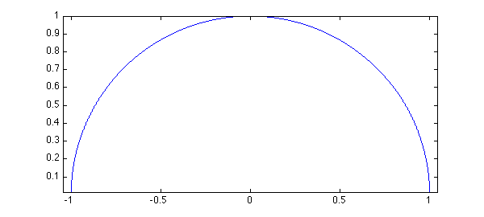
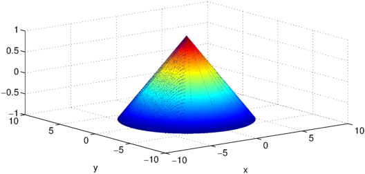
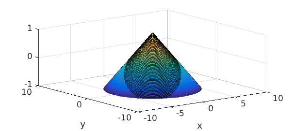
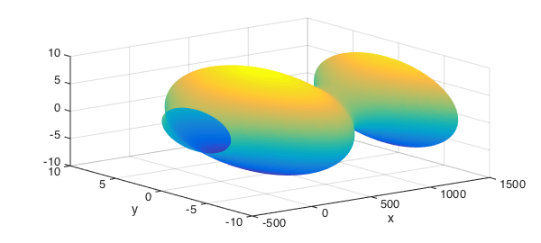
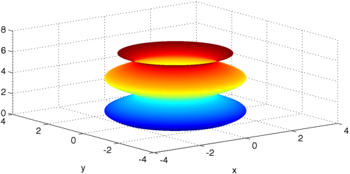
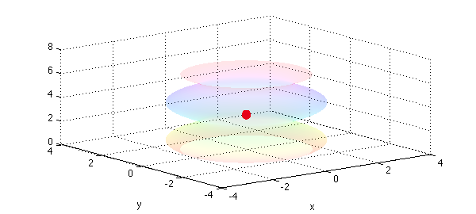
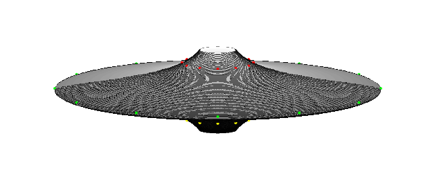

A surface of revolution can be created by rotating a planar generator curve around an axis lying in the same plane as the curve. Chebfun has a command cylinder for such calculations, which takes a chebfun as input and produces a Chebfun2 as output. A classical example is the unit sphere, which can be obtained by rotating $\sqrt{1-x^2}$ defined on $[-1,1]$ around the $x$-axis. Here we have to rotate $\sqrt{1.0001-x^2}$ because Chebfun2 cannot represent functions with square root singularities.
x = chebfun('x');
f = sqrt(1.0001-x.^2);
plot(f,'linewidth',1.6), axis equal
snapnow
cylinder(f), axis equal


An even simpler example is a cone, which is constructed by rotating a linear polynomial around an axis.
In the cylinder command, the input chebfun defines the radius along the unit height of the cylinder. Omitting output arguments causes the cylinder to be displayed with a surf command and no outputs to be returned. For the cone example, we can proceed as follows:
f = chebfun(@(x) -3*x + 3); cylinder(f)

By default the surface of revolution has height $1$ and is displayed as if the generator curve was rotated around the $z$-axis. We can get the $(x,y,z)$-coordinates, stretch the $z$-coordinates to match the interval of definition of the generator chebfun, and rearrange the coordinates so that the generator chebfun is rotated around the $x$-axis:
f = chebfun(@(x) 2.8*sin(0.2*x - 0.1) + 6.3, [-5 35]); ends = f.ends; [xx, yy, zz] = cylinder(f); zzstr = diff(ends)*zz + ends(1); surf(zzstr,flipud(yy),xx)

Let us create yet another surface and study some of its properties within Chebfun.
x = chebfun('x', [0 2*pi]);
f = sqrt(4 + 2*sin(2*x));
[xx, yy, zz] = cylinder(f);
surf(xx,yy,zz)
zlim([0 8])

The volume of this object can be computed as
$$ V = \pi \int_a^b f^2(x)\, \mathrm{d}x. $$
This is a basic computation in Chebfun and we compare the result with the exact value:
V = pi*sum(f.^2) error = V - 8*pi^2
V =
78.956835208714836
error =
-2.842170943040401e-14
The area of the surface is given by
$$ A = 2\pi \int_a^b f(x)\sqrt{1+|f'(x)|^2}\, \mathrm{d}x. $$
A = 2*pi*sum(f.*sqrt(1 + abs(diff(f)).^2))
A = 95.016245402718411
The coordinates of the center of gravity are $x_G=0$, $y_G=0$, and
$$ z_G = \frac{\pi}{V} \int_a^b x f^2(x)\, \mathrm{d}x. $$
zG = pi/V*sum(x.*f.^2) hold on colormap hsv, alpha(.1) plot3(0,0,zG,'.r','MarkerSize',40) zlim([0 8]) hold off
zG = 2.891592653589793

Finally we compute the moment of inertia, assuming that the object is homogeneous with density $1$,
$$ J = \frac{\pi}{2} \int_a^b f^4(x)\, \mathrm{d}x. $$
J = pi/2*sum(f.^4)
J =
1.776528792196084e+02
And a last one:
fls = chebfun('1./(1+8*x.^2)');
[xx, yy, zz] = cylinder(fls);
surf(xx,yy,zz/4)
axis equal
hold on
h = findobj('type', 'axes');
set(h(1), 'visible', 'off')
colormap(gray)
view(0,10)
theta = (0:12)/12*2*pi;
plot3(cos(theta),sin(theta),.01*ones(size(theta)),'g.')
plot3(fls(.4)/2*cos(theta),fls(.4)/2*sin(theta),.17*ones(size(theta)),'r.')
plot3(fls(.4)/2*cos(theta),fls(.4)/2*sin(theta),-.17*ones(size(theta)),'y.')
